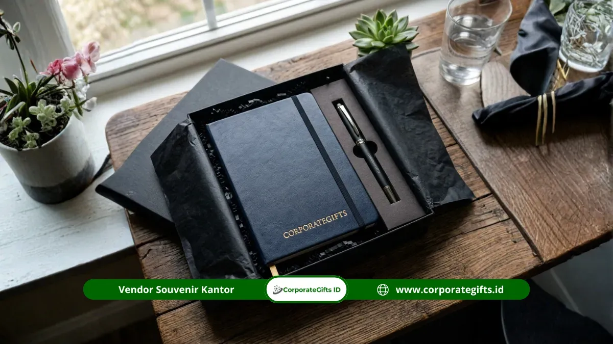

Corporate Gifts ID - Menentukan rekomendasi souvenir terbaik untuk lembaga mitra sekolah negeri membutuhkan kepekaan terhadap etika kelembagaan, kepatuhan regulasi pengadaan, serta nilai fungsional produk. Opsi cenderamata unggulan mencakup plakat penghargaan seremonial, perlengkapan alat tulis harian dual-branding, merchandise tekstil berkelas, produk kerajinan UMKM binaan lokal, hingga perangkat teknologi praktis seperti flashdisk dan power bank.
Kemitraan antara institusi korporat, BUMN, lembaga swadaya, maupun perguruan tinggi dengan sekolah negeri (khususnya SMK vokasi dan SMA rujukan) kerap diikat melalui program strategis seperti magang industri, pelatihan kurikulum vokasi, bantuan sarana pendidikan, atau penyaluran lulusan. Pemberian cenderamata yang tepat berfungsi sebagai representasi visual dari rasa hormat timbal balik serta pengingat fisik yang langgeng.
Poin Kunci Pengadaan Souvenir Mitra Sekolah:
- Plakat Penghargaan: Pilihan utama seremonial penandatanganan nota kesepahaman (MoU) dan penyerahan laporan program.
- Alat Tulis Dual-Branding: Solusi beranggaran efisien dengan nilai guna harian tinggi bagi dewan guru dan staf.
- Merchandise Tekstil (Tote Bag/Polo): Memperluas eksposur merek institusi di ruang publik dan kegiatan luar kelas.
- Nilai Kolaboratif Lokal: Melibatkan kemasan premium untuk mengangkat produk karya siswa atau UMKM binaan daerah.
- Kepatuhan Regulasi Transparansi: Penagihan invoice resmi yang memenuhi standar verifikasi administrasi sekolah negeri.
Mengapa Pilihan Produk Souvenir Memengaruhi Kualitas Relasi Kelembagaan?
Produk cenderamata yang dirancang secara profesional mampu mempertegas kedudukan lembaga Anda di mata pemangku kepentingan institusi pendidikan. Cenderamata bukan sekadar bingkisan, melainkan simbol komitmen jangka panjang.
Riset dari Institute of Promotional Marketing (IPM) menegaskan bahwa 79% penerima souvenir institusional tetap mengingat nama dan citra lembaga pemberi hingga 12 bulan berikutnya jika produk yang diberikan memiliki nilai fungsi nyata dalam keseharian. Temuan ini sangat relevan dalam membina hubungan harmonis dengan pimpinan sekolah, kepala yayasan, dan komite pendidikan.
Plakat Penghargaan: Pilihan Utama untuk Momen Formal
Plakat penghargaan adalah jenis cenderamata paling representatif dalam konteks seremonial resmi kerja sama. Plakat umumnya diserahkan saat seremoni penandatanganan MoU, penutupan program CSR pendidikan, atau pelepasan peserta program magang sekolah negeri.
Karakteristik material plakat yang umum digunakan meliputi:
- Akrilik Presisi: Menampilkan kesan modern, minimalis, dan elegan dengan teknik grafir laser atau print UV warna ganda.
- Kayu Finishing Politer: Menghadirkan wibawa klasik dan hangat, sangat cocok untuk institusi pendidikan berkarakter tradisional.
- Logam Kuningan / Stainless: Tahan puluhan tahun, merefleksikan kerja sama strategis bernilai tinggi.
- Kombinasi Akrilik-Kayu: Desain kontemporer paling populer yang memadukan kehangatan kayu dan kejernihan kristal akrilik.

Pilihan cenderamata fungsional mulai dari alat tulis hingga plakat penghargaan resmi.
Alat Tulis Berlogo: Solusi Fungsional dengan Distribusi Luas
Untuk forum koordinasi rutin, lokakarya, atau rapat kerja gabungan yang melibatkan banyak guru dan perwakilan staf, alat tulis berlogo adalah pilihan paling rasional. Set yang terdiri atas notebook hard cover, pulpen metal eksklusif, dan map dokumen kulit sintetis memberikan nilai guna langsung di ruang kelas.
Kelebihan utama paket alat tulis adalah kemudahannya dalam memuat konsep dual-branding (logo lembaga mitra bersanding harmonis dengan logo sekolah) tanpa terlihat mencolok berlebihan.
Merchandise Tekstil: Visibilitas Merek di Ruang Publik
Merchandise tekstil seperti tote bag kanvas tebal, kaos polo berkerah, atau jaket varsity memberikan dampak promosi berkelanjutan. Saat dikenakan oleh dewan guru atau siswa binaan dalam pameran karya atau studi industri, identitas kolaborasi kedua pihak mendapatkan sorotan positif di mata masyarakat luas.
Produk Lokal dan Souvenir Teknologi untuk Mitra Modern
Jika kemitraan dijalin dengan SMK negeri kejuruan kriya atau boga, memilih produk lokal binaan sekolah sebagai bagian dari bingkisan adalah wujud nyata apresiasi terhadap hasil karya mitra. Sementara bagi mitra dari industri teknologi atau telekomunikasi, gadget seperti USB flashdisk OTG kartu, mini powerbank, atau mousepad kulit sintetis sangat relevan untuk mendukung aktivitas pengajaran digital.
Komparasi Karakteristik dan Rekomendasi Souvenir Mitra Sekolah
Berikut rangkuman panduan pemilihan cenderamata berdasarkan konteks acara dan target penerima:
| Jenis Cenderamata | Target Penerima | Konteks Acara Terbaik | Karakteristik Nilai |
|---|---|---|---|
| Plakat Akrilik / Kayu | Kepala Sekolah, Pejabat Dinas | Penandatanganan MoU, Serah Terima Hibah | Formal, Prestisius, Tahan Puluhan Tahun |
| Executive Writing Kit | Wakil Kepala Sekolah, Dewan Guru | Workshop Vokasi, Rapat Koordinasi Tahunan | Fungsional Harian, Dual-Logo Elegan |
| Tote Bag Kanvas & Polo | Tim Fasilitator, Instruktur Industri | Pelatihan Magang, Kunjungan Industri | Visibilitas Publik Tinggi, Kasual Rapi |
| Gadget USB & Powerbank | Guru Produktif, Tim TI Sekolah | Sosialisasi Digital, Program Kelas Industri | Modern, Fleksibel, Sangat Berguna |
FAQ Seputar Souvenir Mitra Sekolah
Kesimpulan: Memilih Cenderamata Tepat Sesuai Konteks Kerja Sama
Tidak ada satu solusi tunggal untuk setiap momentum kemitraan. Plakat tepat untuk pengikatan komitmen formal, alat tulis untuk silaturahmi rutin, tekstil untuk promosi komunitas, dan teknologi untuk mitra berbasis modernitas.
Diskusikan rancangan cenderamata kemitraan institusi Anda bersama CorporateGifts.ID. Kami menyediakan fasilitas sampel gratis, konsultasi dual-branding, serta kelengkapan berkas faktur B2B resmi demi mendukung kelancaran administrasi kerja sama Anda.

Ditulis oleh: Arinda Zakia
Senior Corporate Gifting SpecialistSpesialis kurasi merchandise dan souvenir korporat di CorporateGifts.ID. Berpengalaman lebih dari 7 tahun dalam menyusun paket corporate gift fungsional untuk instansi BUMN, kementerian, perbankan, dan institusi pendidikan di Indonesia.
Lihat Profil Lengkap & Panduan Lainnya